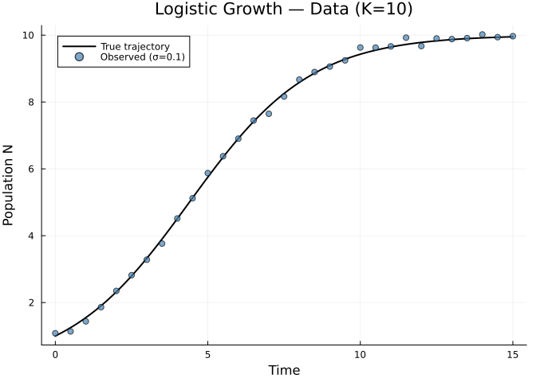
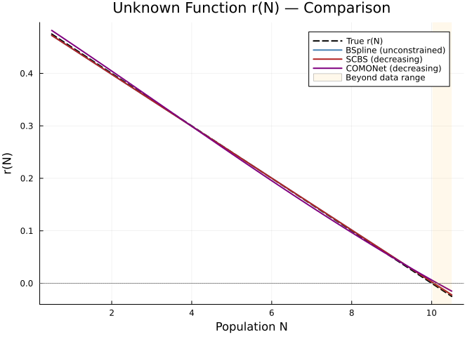
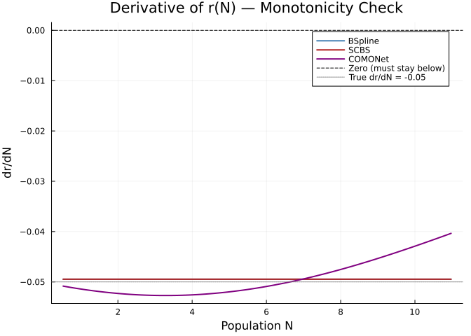
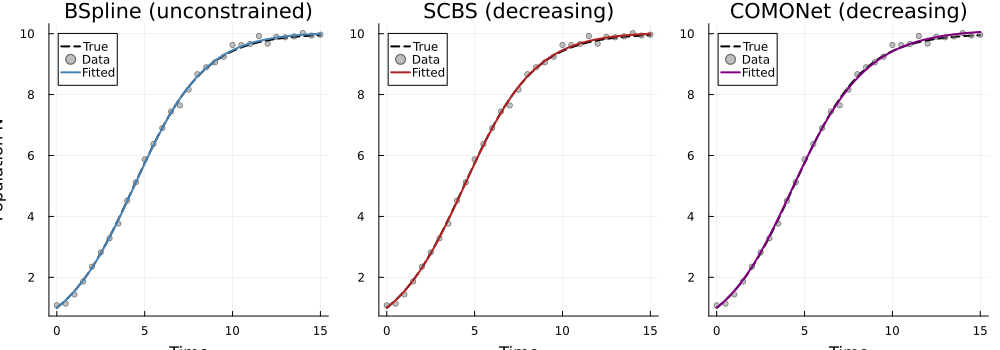
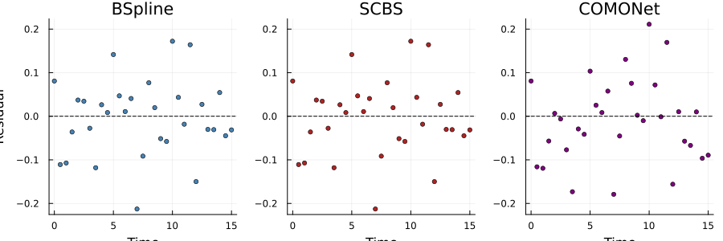
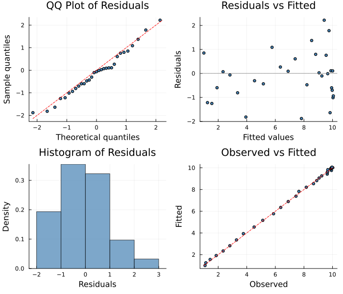

COMONet: Shape-Constrained Neural Network Approximators
Overview
When modeling ecological systems, we often know qualitative properties of unknown functional responses — for example, that a predator’s functional response should be increasing in prey density, or that per-capita growth should be decreasing (density dependence). PartiallySpecifiedModels.jl offers two approaches to enforce such constraints:
ShapeConstrainedBSplineApproximator(SCBS) — B-spline basis functions with reparameterized coefficients (SCOP-splines, following Pya & Wood 2015). Uses the convex hull property of B-splines to guarantee constraints globally.COMONetApproximator— Neural networks with positive weights (exp(W)) and monotone activations. Compositional structure guarantees shape constraints by construction.
This vignette compares both constrained approximators against an unconstrained B-spline baseline on a logistic growth model.
using PartiallySpecifiedModels
using OrdinaryDiffEq
using Plots
using Random
Random.seed!(123)TaskLocalRNG()Logistic Growth with Unknown Per-Capita Rate
The per-capita growth rate r(N) should be decreasing in population density (negative density dependence). In the standard logistic model, r(N) = r₀(1 - N/K) is linear, but we treat the functional form as unknown and attempt to recover it from time series data.
True model: r(N) = 0.5 × (1 - N/10).
function logistic!(du, u, p, t)
N = u[1]
du[1] = p.r(N) * N
end
r_true(N) = 0.5 * (1.0 - N / 10.0)r_true (generic function with 1 method)Generate Data
We simulate the logistic model and add Gaussian observation noise.
true_p = (; r = r_true)
tspan = (0.0, 15.0)
sol_true = solve(ODEProblem(logistic!, [1.0], tspan, true_p),
Tsit5(); saveat=0.5)
t_data = collect(sol_true.t)
N_true = [sol_true.u[i][1] for i in 1:length(sol_true.t)]
noise = 0.1
data_N = N_true .+ noise .* randn(length(N_true))
data_N = max.(data_N, 0.01)
data_matrix = reshape(data_N, :, 1)31×1 Matrix{Float64}:
1.0808287928464968
1.136355836985646
1.4378176182927203
1.8625904014822638
2.3484534289135692
2.817417961585688
3.2821042543395347
3.7646683559662257
4.515507869399177
5.120146374336009
⋮
9.663164223961433
9.924462804590682
9.672961065403618
9.89948006515763
9.880810437689874
9.91070778198356
10.019700530926274
9.939336542400193
9.967408726656815Plot the Data
t_fine = range(tspan..., length=200)
sol_fine = solve(ODEProblem(logistic!, [1.0], tspan, true_p), Tsit5(); saveat=collect(t_fine))
N_fine = [sol_fine.u[i][1] for i in 1:length(sol_fine.u)]
p_data = plot(t_fine, N_fine, label="True trajectory", lw=2, color=:black,
xlabel="Time", ylabel="Population N",
title="Logistic Growth — Data (K=10)")
scatter!(p_data, t_data, data_N, label="Observed (σ=$noise)", ms=4,
color=:steelblue, alpha=0.7)
p_data
Figure 1: Observed data (circles) vs true trajectory (line)
Approach 1: Unconstrained B-Spline (Baseline)
A standard B-spline approximator with no shape constraints, fitted via LAML for automatic smoothing.
uf_bs = BSplineApproximator(:r, (0.5, 10.5), 10)
prob_bs = PSMProblem(logistic!, [1.0], tspan, [uf_bs];
data_times=t_data, data_values=Float64.(data_matrix),
obs_to_state=[1], known_params=NamedTuple(),
likelihood=PartiallySpecifiedModels.Gaussian())
sol_bs = solve(prob_bs, LAML(maxiters=60, verbose=false))PSMSolution((r = [0.4724177652275601, 0.4174588452181277, 0.3624999246855977, 0.3075410027263789, 0.25258207870144156, 0.19762315351498358, 0.14266423036811765, 0.08770531059790543, 0.03274638966310394, -0.022212534302394595]), 0.11466731356247549, 0.2293346247167977, 2.0000139662786847, [187459.6236430063], [1.0; 1.2471798683604522; … ; 9.98404348089259; 9.998687156853153;;], [1.0808287928464968; 1.136355836985646; … ; 9.939336542400193; 9.967408726656815;;], [0.0, 0.5, 1.0, 1.5, 2.0, 2.5, 3.0, 3.5, 4.0, 4.5 … 10.5, 11.0, 11.5, 12.0, 12.5, 13.0, 13.5, 14.0, 14.5, 15.0], Dict{Symbol, Any}(:r => DataInterpolations.CubicSpline{Vector{Float64}, Vector{Float64}, Vector{Float64}, Vector{Float64}, Vector{Float64}, Vector{Float64}, Float64}([0.4724177652275601, 0.4174588452181277, 0.3624999246855977, 0.3075410027263789, 0.25258207870144156, 0.19762315351498358, 0.14266423036811765, 0.08770531059790543, 0.03274638966310394, -0.022212534302394595], [0.5, 1.6111111111111112, 2.7222222222222223, 3.8333333333333335, 4.944444444444445, 6.055555555555555, 7.166666666666667, 8.277777777777779, 9.38888888888889, 10.5], Float64[], DataInterpolations.CubicSplineParameterCache{Vector{Float64}}(Float64[], Float64[]), [0.0, 1.1111111111111112, 1.1111111111111112, 1.1111111111111112, 1.1111111111111112, 1.1111111111111107, 1.1111111111111116, 1.1111111111111116, 1.1111111111111107, 1.1111111111111107], [0.0, -3.399906937080001e-10, -1.1822914323175963e-9, -1.864551235051645e-9, -1.3988957451092064e-9, 1.8151438403463709e-9, 4.050737970467491e-9, -1.6075586929397026e-9, -3.2804072441494952e-9, 0.0], DataInterpolations.ExtrapolationType.Linear, DataInterpolations.ExtrapolationType.Linear, FindFirstFunctions.Guesser{Vector{Float64}}([0.5, 1.6111111111111112, 2.7222222222222223, 3.8333333333333335, 4.944444444444445, 6.055555555555555, 7.166666666666667, 8.277777777777779, 9.38888888888889, 10.5], Base.RefValue{Int64}(1), true), false, false)), (V_beta = [0.0008306438649445832 0.0007008038074052642 … -0.00020778422996264582 -0.00033755085151513536; 0.0007008038074052642 0.0005937107012483135 … -0.0001558036291074594 -0.0002628567883857095; … ; -0.00020778422996264582 -0.0001558036291074594 … 0.0002080694724026063 0.00026005194800058154; -0.00033755085151513536 -0.0002628567883857095 … 0.00026005194800058154 0.0003347704970687114], sigma2 = 0.007908094315980923, converged = true, iterations = 11, reason = :converged_tol, laml_failures = 0, criterion = :working, laml = 63.52675652186464, stationarity = 2.149254057504102e-6, smoothing_advanced = true))Approach 2: Shape-Constrained B-Spline (Decreasing)
The SCBS reparameterizes B-spline coefficients via a Σ matrix and softplus transform to guarantee the function is decreasing everywhere. We use LAML for automatic smoothing parameter selection.
uf_scbs = ShapeConstrainedBSplineApproximator(:r, (0.5, 10.5), 10, :decreasing)
prob_scbs = PSMProblem(logistic!, [1.0], tspan, [uf_scbs];
data_times=t_data, data_values=Float64.(data_matrix),
obs_to_state=[1], known_params=NamedTuple(),
likelihood=PartiallySpecifiedModels.Gaussian())
sol_scbs = solve(prob_scbs, LAML(maxiters=60, verbose=false))PSMSolution((r = [0.5430792722433878, -2.6143159681255654, -2.614315968122794, -2.614315968069868, -2.6143159679486785, -2.6143159678620553, -2.6143159680178303, -2.6143159681321664, -2.614315967938592, -2.6143159679118435]), 0.11466717002356872, 0.2293346370202298, 1.9999824621089934, [1.1908726507369092e8], [1.0; 1.2471798849782112; … ; 9.98404340650195; 9.9986870772015;;], [1.0808287928464968; 1.136355836985646; … ; 9.939336542400193; 9.967408726656815;;], [0.0, 0.5, 1.0, 1.5, 2.0, 2.5, 3.0, 3.5, 4.0, 4.5 … 10.5, 11.0, 11.5, 12.0, 12.5, 13.0, 13.5, 14.0, 14.5, 15.0], Dict{Symbol, Any}(:r => PartiallySpecifiedModels.var"#evaluator#build_constrained_bspline_evaluator##0"{Float64, Float64, Float64, Float64, Float64, Float64, Float64, Int64, Vector{Float64}, Vector{Float64}}(0.0, -0.022212539919494796, 0.47241779572974524, -0.04946303353006669, -0.04946303357214833, 10.5, 0.5, 4, [-3.7857142857142856, -2.357142857142857, -0.9285714285714286, 0.5, 1.9285714285714286, 3.357142857142857, 4.785714285714286, 6.214285714285714, 7.642857142857143, 9.071428571428571, 10.5, 11.928571428571429, 13.357142857142858, 14.785714285714285], [0.5430792722433878, 0.4724177957297767, 0.4017563192159765, 0.33109484269856554, 0.2604333661728867, 0.1897718896412982, 0.1191104131203371, 0.04844893660717631, -0.022212539919190658, -0.09287401644738248])), (V_beta = [0.0012018257485815341 0.0029965200117872564 … 0.0029965139571634792 0.0029965139466649666; 0.0029965200117872564 0.00806983027536615 … 0.008069791860972982 0.008069791823243131; … ; 0.0029965139571634792 0.008069791860972982 … 0.008069812227002617 0.008069812189272753; 0.0029965139466649666 0.008069791823243131 … 0.008069812189272753 0.008069820548746397], sigma2 = 0.007908086149278511, converged = true, iterations = 24, reason = :converged_tol, laml_failures = 0, criterion = :working, laml = 64.20342270575131, stationarity = 5.992285667666408e-9, smoothing_advanced = true))Approach 3: COMONet (Decreasing)
COMONet uses a neural network with positive weights (exp(W̃)) and monotone activations. For a :decreasing constraint, the input is negated before the forward pass.
The :increasing and :decreasing classes used here are built from a tanh network: positive exp(W̃) weights with tanh hidden units and a linear output layer exp(W̃)·h + b carrying an unconstrained bias b. Positive weights composed with a nondecreasing activation guarantee monotonicity, while tanh leaves the curvature free, so sigmoid-like and other monotone-but-non-convex shapes remain representable.
Note that the activation keyword (:relu by default, or :softplus) does not apply here: it is consulted only for the curvature-constrained classes (:convex, :concave, :inc_convex, :inc_concave, :dec_convex, :dec_concave). The purely monotone classes ignore it.
uf_como = COMONetApproximator(:r, (0.5, 10.5), (8,), :decreasing;
penalty_weight=0.001)
prob_como = PSMProblem(logistic!, [1.0], tspan, [uf_como];
data_times=t_data, data_values=Float64.(data_matrix),
obs_to_state=[1], known_params=NamedTuple(),
likelihood=PartiallySpecifiedModels.Gaussian())
sol_como = solve(prob_como, AdamSolver(lr=0.01, maxiters=3000, verbose=false))PSMSolution((r = [-0.34939899313311495, -0.3249758068840254, -0.31707865752228204, -0.30655820916689314, -0.41842627731109355, -0.3980802366709291, -0.34188119798079175, -0.36467518029685075, 0.15836545129029897, 0.013638521128107185 … 0.36683678718565643, -0.21726378501856078, -0.22939077176196282, -0.19312056803788896, -0.3331239410346449, -0.2862303342600359, -0.3563035292636249, -0.38202477426712683, -0.21159952673264026, 0.331714118694628]), 0.27566679981889125, 0.2756666724885025, 25.0, Float64[], [1.0; 1.2523450075043085; … ; 10.035697490352911; 10.056707142690806;;], [1.0808287928464968; 1.136355836985646; … ; 9.939336542400193; 9.967408726656815;;], [0.0, 0.5, 1.0, 1.5, 2.0, 2.5, 3.0, 3.5, 4.0, 4.5 … 10.5, 11.0, 11.5, 12.0, 12.5, 13.0, 13.5, 14.0, 14.5, 15.0], Dict{Symbol, Any}(:r => PartiallySpecifiedModels.var"#evaluator#build_comonet_evaluator##0"{COMONetApproximator, Symbol, Float64, Float64, Vector{Tuple{Matrix{Float64}, Vector{Float64}}}}(COMONetApproximator(:r, (0.5, 10.5), (8,), :decreasing, 0.001, :relu, nothing), :relu, 10.0, 0.5, [([-0.34939899313311495; -0.3249758068840254; … ; -0.34188119798079175; -0.36467518029685075;;], [0.15836545129029897, 0.013638521128107185, 0.2002586811611985, 0.1318890894223681, 0.29260209778439134, 0.3629158307476868, 0.09657155512871318, 0.36683678718565643]), ([-0.21726378501856078 -0.22939077176196282 … -0.38202477426712683 -0.21159952673264026], [0.331714118694628])])), (optimizer = :adam, method = :adam_ode, converged = true, iterations = 2324, reason = :plateau, final_grad_norm = 0.3354714230427922, backend = :forwarddiff))Comparison of Recovered Functions
Unknown Function r(N)
r_bs = sol_bs.unknown_functions[:r]
r_scbs = sol_scbs.unknown_functions[:r]
r_como = sol_como.unknown_functions[:r]
N_range = range(0.5, 10.5, length=100)
r_true_vals = [r_true(N) for N in N_range]
r_bs_vals = [r_bs(N) for N in N_range]
r_scbs_vals = [r_scbs(N) for N in N_range]
r_como_vals = [r_como(N) for N in N_range]100-element Vector{Float64}:
0.48187771462561
0.47673994568003186
0.471588991441114
0.46642530831147644
0.46124935721341187
0.45606160343144375
0.45086251645165787
0.4456525697979229
0.44043224086511673
0.43520201074947984
⋮
0.019512600614537245
0.01511425221514806
0.010741429707489092
0.006394328284131001
0.002073135976041862
-0.0022219663267367684
-0.006490804851023602
-0.010733212913114742
-0.014949030888159132N_data_max = maximum(data_N)
p_fn = plot(collect(N_range), r_true_vals, color=:black, lw=2, ls=:dash, label="True r(N)",
xlabel="Population N", ylabel="r(N)",
title="Unknown Function r(N) — Comparison")
plot!(p_fn, collect(N_range), r_bs_vals, color=:steelblue, lw=2, label="BSpline (unconstrained)")
plot!(p_fn, collect(N_range), r_scbs_vals, color=:firebrick, lw=2, label="SCBS (decreasing)")
plot!(p_fn, collect(N_range), r_como_vals, color=:purple, lw=2, label="COMONet (decreasing)")
hline!(p_fn, [0.0], color=:grey, ls=:dot, label="")
vspan!(p_fn, [N_data_max, 10.5], color=:orange, alpha=0.08, label="Beyond data range")
p_fn
Figure 2: Recovered r(N): unconstrained B-spline vs shape-constrained methods
Edge Saturation in COMONet
Edge saturation is the characteristic failure mode to watch for with this architecture, so it is worth being precise about how much of it is actually present here — the answer is: much less than you might expect.
The mechanism is real. The :increasing/:decreasing classes use tanh hidden units, and tanh flattens once its pre-activation grows large, so a COMONet fit can lose slope toward the ends of its domain where data are sparse. In the comparison table below, that shows up as a gentle shallowing: the fitted slope runs about $-0.052$ per unit $N$ at the bottom of the domain and about $-0.046$ at the top, against a constant true slope of $-0.05$. That is a modest effect, and across the interior the fit tracks the linear truth closely.
Saturation constrains the slope, not the sign. This is worth stating plainly because it is easy to assume otherwise. The monotone network’s output layer is exp(W̃)·h + b with h ∈ (−1,1) and an unconstrained bias b, so its range is (b − Σ|W|, b + Σ|W|) — sign-unrestricted, with no floor at zero. The fit above bears this out: it passes through zero near N=10 and continues negative to the top of the domain, following the true r(N), which crosses zero at exactly N=10.
The practical caveat is therefore about flexibility near a boundary, not about sign. Where a function must turn sharply at the edge of its domain, tanh saturation will fight you and SCBS or an unconstrained B-spline will follow the data more closely. COMONet’s compensating advantage is that monotonicity holds by construction across the whole real line, rather than being enforced at a finite set of knots.
Verify Monotonicity
Both constrained methods should produce strictly decreasing functions. The unconstrained B-spline may violate monotonicity.
test_N = collect(range(0.5, 11.0, length=200))
bs_test = [r_bs(N) for N in test_N]
scbs_test = [r_scbs(N) for N in test_N]
como_test = [r_como(N) for N in test_N]
bs_mono = all(diff(bs_test) .<= 1e-10)
scbs_mono = all(diff(scbs_test) .<= 1e-10)
como_mono = all(diff(como_test) .<= 1e-10)
println("Monotonicity check (decreasing):")
println(" BSpline (unconstrained): $bs_mono")
println(" SCBS: $scbs_mono")
println(" COMONet: $como_mono")Monotonicity check (decreasing):
BSpline (unconstrained): true
SCBS: true
COMONet: trueDerivative Visualization
We can directly visualize whether the constraint is satisfied by plotting the numerical derivative:
Δ = test_N[2] - test_N[1]
dr_bs = diff(bs_test) ./ Δ
dr_scbs = diff(scbs_test) ./ Δ
dr_como = diff(como_test) ./ Δ
N_mid = test_N[1:end-1] .+ Δ/2
p_deriv = plot(N_mid, dr_bs, color=:steelblue, lw=2, label="BSpline",
xlabel="Population N", ylabel="dr/dN",
title="Derivative of r(N) — Monotonicity Check")
plot!(p_deriv, N_mid, dr_scbs, color=:firebrick, lw=2, label="SCBS")
plot!(p_deriv, N_mid, dr_como, color=:purple, lw=2, label="COMONet")
hline!(p_deriv, [0.0], color=:black, lw=1, ls=:dash, label="Zero (must stay below)")
hline!(p_deriv, [-0.05], color=:grey, lw=1, ls=:dot, label="True dr/dN = -0.05")
p_deriv
Figure 3: Numerical derivative dr/dN — constrained methods stay non-positive
Fitted Trajectories
t_pred = collect(range(tspan..., length=200))
traj_bs = solve(ODEProblem(logistic!, [1.0], tspan, (; r = r_bs)), Tsit5();
saveat=t_pred, abstol=1e-8, reltol=1e-8)
traj_scbs = solve(ODEProblem(logistic!, [1.0], tspan, (; r = r_scbs)), Tsit5();
saveat=t_pred, abstol=1e-8, reltol=1e-8)
traj_como = solve(ODEProblem(logistic!, [1.0], tspan, (; r = r_como)), Tsit5();
saveat=t_pred, abstol=1e-8, reltol=1e-8)
N_bs = [traj_bs.u[k][1] for k in 1:length(traj_bs.u)]
N_scbs = [traj_scbs.u[k][1] for k in 1:length(traj_scbs.u)]
N_como = [traj_como.u[k][1] for k in 1:length(traj_como.u)]
p1 = plot(t_fine, N_fine, color=:black, lw=2, ls=:dash, label="True",
xlabel="Time", ylabel="Population N", title="BSpline (unconstrained)")
scatter!(p1, t_data, data_N, ms=3, color=:grey, alpha=0.5, label="Data")
plot!(p1, t_pred, N_bs, color=:steelblue, lw=2, label="Fitted")
p2 = plot(t_fine, N_fine, color=:black, lw=2, ls=:dash, label="True",
xlabel="Time", ylabel="", title="SCBS (decreasing)")
scatter!(p2, t_data, data_N, ms=3, color=:grey, alpha=0.5, label="Data")
plot!(p2, t_pred, N_scbs, color=:firebrick, lw=2, label="Fitted")
p3 = plot(t_fine, N_fine, color=:black, lw=2, ls=:dash, label="True",
xlabel="Time", ylabel="", title="COMONet (decreasing)")
scatter!(p3, t_data, data_N, ms=3, color=:grey, alpha=0.5, label="Data")
plot!(p3, t_pred, N_como, color=:purple, lw=2, label="Fitted")
plot(p1, p2, p3, layout=(1, 3), size=(1000, 350), link=:y)
Figure 4: Fitted population trajectories compared to data — one panel per method
Residuals
res_bs = data_N .- sol_bs.fitted_values[:, 1]
res_scbs = data_N .- sol_scbs.fitted_values[:, 1]
res_como = data_N .- sol_como.fitted_values[:, 1]
p_res = plot(layout=(1, 3), size=(900, 300), link=:y)
scatter!(p_res, t_data, res_bs, subplot=1, ms=3, color=:steelblue, label="",
xlabel="Time", ylabel="Residual", title="BSpline")
hline!(p_res, [0.0], subplot=1, color=:black, ls=:dash, label="")
scatter!(p_res, t_data, res_scbs, subplot=2, ms=3, color=:firebrick, label="",
xlabel="Time", title="SCBS")
hline!(p_res, [0.0], subplot=2, color=:black, ls=:dash, label="")
scatter!(p_res, t_data, res_como, subplot=3, ms=3, color=:purple, label="",
xlabel="Time", title="COMONet")
hline!(p_res, [0.0], subplot=3, color=:black, ls=:dash, label="")
p_res
Figure 5: Residuals (observed − fitted) for each method
Numerical Summary
Per-capita growth rate r(N) comparison:
N | True | BSpline | SCBS | COMONet
-----|---------|---------|---------|--------
0.5 | 0.475 | 0.472 | 0.472 | 0.482
2.0 | 0.400 | 0.398 | 0.398 | 0.404
4.0 | 0.300 | 0.299 | 0.299 | 0.299
6.0 | 0.200 | 0.200 | 0.200 | 0.195
8.0 | 0.100 | 0.101 | 0.101 | 0.097
10.0 | 0.000 | 0.003 | 0.003 | 0.006
Data fit (RMSE):
BSpline: 0.0860
SCBS: 0.0860
COMONet: 0.0943Method Comparison
| Feature | BSpline | SCBS | COMONet |
|---|---|---|---|
| Constraint | None | Coefficient reparameterization | Positive weights + monotone activations |
| Parameters | 10 (knot coefficients) | 10 (unconstrained γ) | 25 (weights + biases) |
| Smoothness | Cubic (C²) | Cubic (C²) | Monotone classes (used here): tanh, smooth (C∞). Curvature-constrained classes: ReLU piecewise linear (C⁰), or C∞ with activation=:softplus |
| Monotonicity | Not guaranteed | Guaranteed | Guaranteed |
| Compatible solvers | All (LAML, Adam, MCMC, …) | All (LAML preferred) | Adam, MCMC, GradientMatching |
| Formal proofs | — | Convex hull property | Lean 4 verified (43 theorems) |
When to use unconstrained B-splines:
- No prior knowledge about function shape
- Need maximum flexibility (may overfit without smoothing penalty)
- Compatible with LAML solver for automatic smoothing parameter selection
When to use SCBS:
- Known monotonicity, convexity, or other shape constraints
- Parsimonious models with few parameters
- LAML solver available for automatic smoothing
When to use COMONet:
- Need formally verified constraint guarantees that hold everywhere, not just at knots
- Complex constraints (e.g., combinations of monotonicity and convexity)
- For the curvature-constrained classes, choose
activation=:softpluswhen smooth derivatives are needed, or:relu(default) for faster convergence. The monotone classes:increasing/:decreasingignore this setting and always use tanh - Caveat: COMONet saturates at the domain edges, so it is a poor choice when the function must turn sharply near a boundary — use SCBS there. Note that saturation does not restrict sign: the monotone classes have a free output bias and can cross zero, as the fit above does
- If you need a guaranteed non-negative function, use the
:positiveconstraint, which wraps the network inexp(·). Monotonicity alone does not imply positivity
Diagnostic Plots
A standard 4-panel diagnostic display assesses residual behaviour for the COMONet fit. The QQ plot checks normality of standardized residuals, “Residuals vs Fitted” detects systematic patterns, the histogram visualises the residual distribution, and “Observed vs Fitted” checks overall calibration.
using PartiallySpecifiedModels: appraise
diag = appraise(sol_como)
p_qq = scatter(diag.qq_theoretical, diag.qq_sample,
xlabel="Theoretical quantiles", ylabel="Sample quantiles",
title="QQ Plot of Residuals", ms=3, legend=false, color=:steelblue)
mn, mx = extrema(vcat(diag.qq_theoretical, diag.qq_sample))
plot!(p_qq, [mn, mx], [mn, mx], color=:red, ls=:dash, label="")
p_rf = scatter(diag.fitted, diag.residuals,
xlabel="Fitted values", ylabel="Residuals",
title="Residuals vs Fitted", ms=3, legend=false, color=:steelblue)
hline!(p_rf, [0], color=:gray, ls=:dot)
p_hist = histogram(diag.residuals, normalize=:pdf,
xlabel="Residuals", ylabel="Density",
title="Histogram of Residuals", legend=false, color=:steelblue, alpha=0.7)
p_of = scatter(diag.observed, diag.fitted,
xlabel="Observed", ylabel="Fitted",
title="Observed vs Fitted", ms=3, legend=false, color=:steelblue)
mn2, mx2 = extrema(vcat(diag.observed, diag.fitted))
plot!(p_of, [mn2, mx2], [mn2, mx2], color=:red, ls=:dash, label="")
plot(p_qq, p_rf, p_hist, p_of, layout=(2, 2), size=(700, 600))
Durbin-Watson: 1.754Summary
Shape constraints significantly improve function recovery, especially near domain boundaries where data is sparse. Both ShapeConstrainedBSplineApproximator and COMONetApproximator correctly enforce the decreasing constraint, while the unconstrained BSplineApproximator may violate it. The SCBS approach offers parsimony, smoothness, and the ability to represent sign-changing functions, while COMONet provides a neural network alternative with formally verified constraint guarantees and natural non-negativity — best suited for inherently positive functional responses.